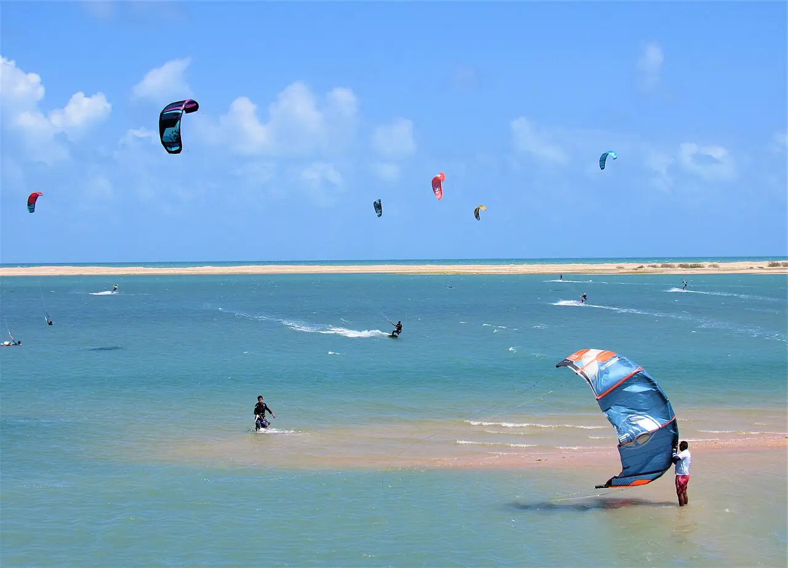

Ilha do Guajiru
Ceará, Brésil · kitesurf

Lagune abritée par une île de sable près d’Itarema, sur la côte ouest du Ceará. L’eau plate et peu profonde et le vent régulier en saison attirent kitesurfeurs en progression et freestylers.
- Lieu
- Ceará, Brésil
- Niveau
- Intermédiaire
- Activités
- kitesurf
- Type d'eau
- Mer / océan
- Coordonnées
- -2.88, -39.92 (position approximative du secteur)
Dangers à connaître
- Courant de marée dans la passe entre l’île et la mer.
- Bateaux de pêche dans le chenal.
Le conseil d'Ocean Buddy
Le spot est isolé et se rejoint par des pistes de sable : réserve ton hébergement et ton transfert à l’avance.
Ouvrir dans Ocean Buddy Télécharger sur l'App Store
Source : Fiche Ocean Buddy · septembre 2026 · à vérifier localement.